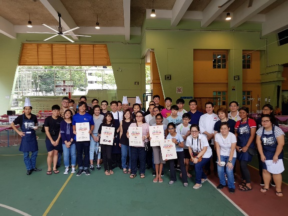
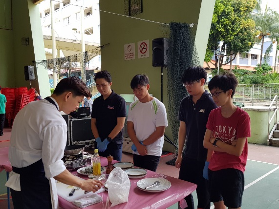
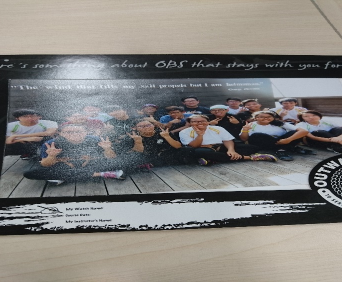
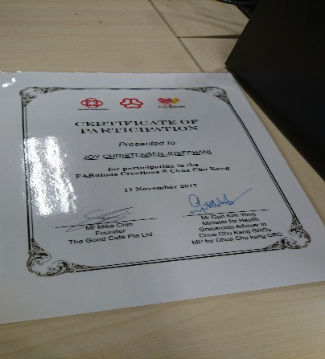

Paticulars
Name: Joy Christensen Josephani
DOB: 17/1/1998
Nationality: Indonesia
Gender: Male
Address: Blk 17 # 11-54 dover cresent singapore 130017
Occupation: Student
Name: Joy Christensen Josephani
DOB: 17/1/1998
Nationality: Indonesia
Gender: Male
Address: Blk 17 # 11-54 dover cresent singapore 130017
Occupation: Student
I am a student currently studying at singapore polytechnic. I studied HTML , java and network fundamentals.
Before I came here I was studying in ITE at Mobile network appilcations course where I did java programing , cisco and I learned on how to create mobile apps using android studio.
Interest: Gaming development, programing, setting up computer.
If I had the chance I go for game development course where I can create my own game. I've wanted to become a game developer since I played zelda the ocarina of time I just love the style its a complete original design.
As of now I'm still only a student but I'm not willing to give up, but my ambition is to one day have at least a secondary income come from games
Being a game developer is less like being a director on your very own movie and a lot more like being a construction worker… without a union. Job stability and opportunities for advancement are presently unusual, the environment is often high-pressure to the point of making it difficult to have a life outside of work, profits are a terrible uncertainty. I suspect it will only get more difficult in the next few years.
The Important people in my lifes are the ones who stick by me through tough times.One of them is my parents and friends, and also my teachers they're help me torwards success but easily forgotten.
One big mistake people make is not realizing that happiness is an individual choice. But every choice is influenced by the people in our lives. If you change your life influencers for the better, you can dramatically increase your chances for happiness and success.
Community Services
Fabulous Creation 2017
OBS 2016
Residental cooking programe
